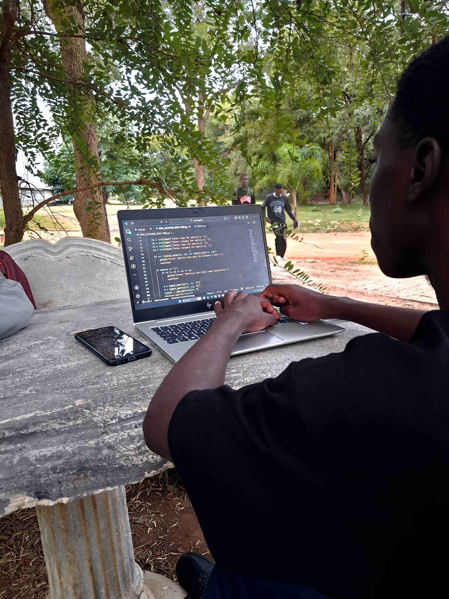
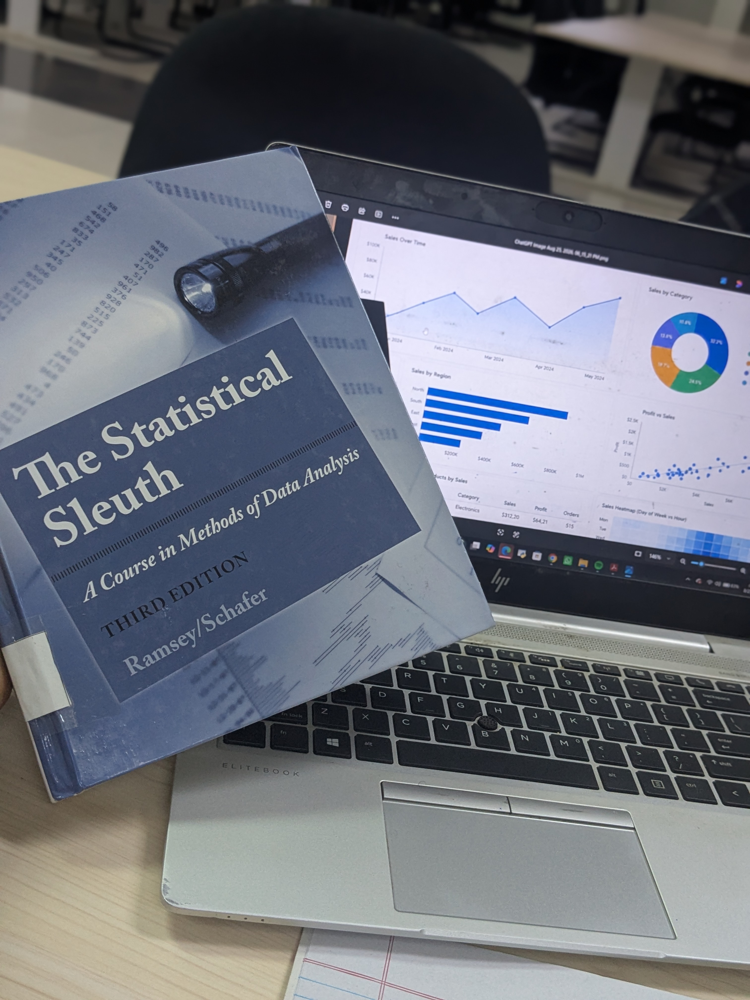

Web Development
Learning HTML5, CSS and JavaScript to build structured, responsive and interactive websites.
Computer Science Student | Aspiring Data Scientist
Welcome to my personal portfolio. I am a Computer Science student at Mulungushi University interested in programming, data science, artificial intelligence and building practical technology solutions. This website showcases my learning journey, hobbies, projects and goals.
View My ProjectsMy name is Paul Sichone, a second-year Computer Science student. I am passionate about learning new technologies, particularly Data Science and Artificial Intelligence. I am still developing my professional experience in this field. I have been consistently learning Python, problem-solving skills, and I love working with people who never stop learning.
My goal is to develop strong skills in Data Science and Artificial Intelligence.
| Day | Topic | Practical Task |
|---|---|---|
| Monday | HTML | Create the content of a webpage |
| Tuesday | CSS | Style the page with colors |
| Wednesday | Python Basics | Build a small project |
| Thursday | Python Libraries | Clean data with Pandas |
| Friday | Power BI | Build a small project |
This section highlights the skills I am developing through coursework, independent practice and practical projects.
Learning HTML5, CSS and JavaScript to build structured, responsive and interactive websites.
Developing Python programming skills and exploring how data can be cleaned, analysed and interpreted.
Practising classes, objects, encapsulation and JavaFX interfaces through university programming tasks.
These photos represent my journey as a Computer Science student at Mulungushi University, learning programming and exploring technology through practical experiences.
A Computer Science student pursuing knowledge and practical skills.

Developing programming and data analysis skills through practice.

Exploring new ideas and building knowledge beyond lectures.
Photo 1 of 3
A short introduction to my Computer Science journey, interests and passion for technology.
An audio introduction about my studies, learning journey and technology interests.
Browser demonstration only — no message is sent. This form validates your details and displays a local preview.
Name:
Email:
Message: